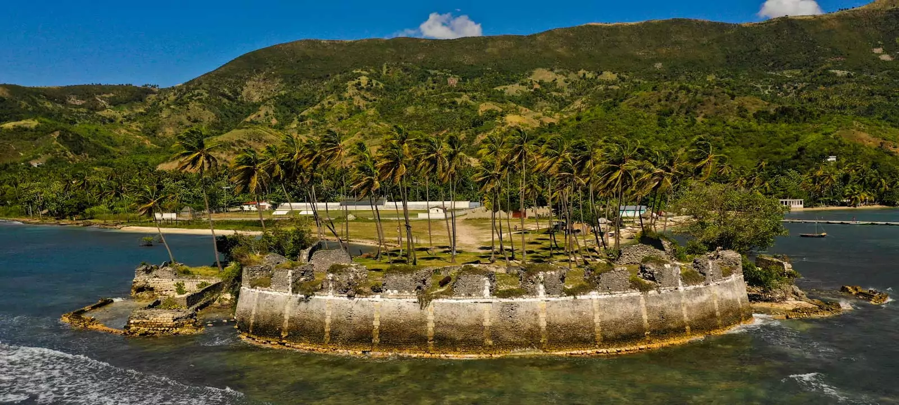
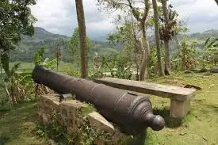
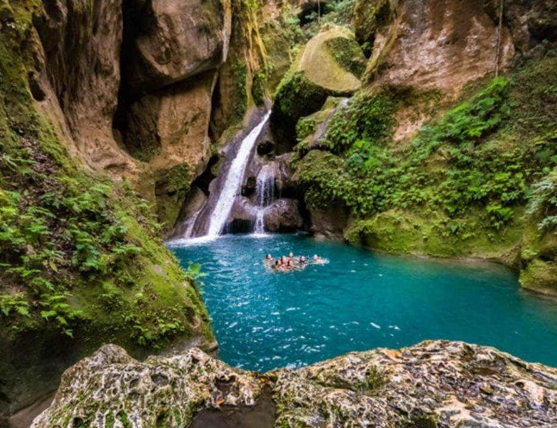
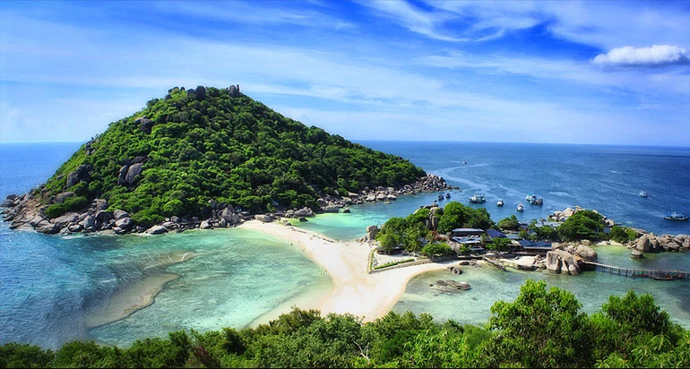
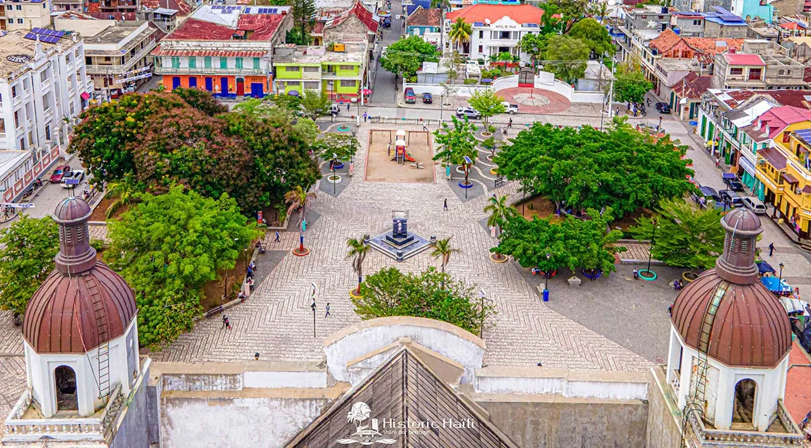

Citadelle Laferrière
The largest fortress in the Caribbean, a symbol of freedom and Haitian independence.
The largest fortress in the Caribbean, a symbol of freedom and Haitian independence.

A historic fort built to protect the southern coast of Haiti from invasions.

A relic of Haiti's historic battles, a testament to the fight for independence.

A series of natural pools with turquoise waters, surrounded by lush vegetation.

The former residence of King Henri Christophe, now a UNESCO World Heritage site.

A nature reserve home to exceptional biodiversity and endemic species.

A former pirate stronghold, now a popular destination for its pristine beaches.

Famous for its carnival, vibrant artisan culture, and colonial architecture.